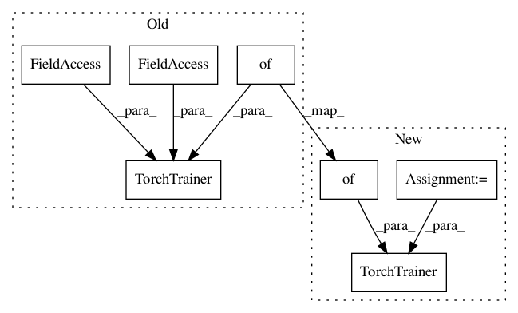

415be78cc0d1275a29d0ceda550d0d7a7a5224ea,python/ray/util/sgd/torch/examples/raysgd_torch_signatures.py,,,#,109
Before Change
// __torch_trainer_start__
from ray.util.sgd import TorchTrainer
trainer = TorchTrainer(
model_creator=model_creator,
data_creator=data_creator,
optimizer_creator=optimizer_creator,
loss_creator=nn.MSELoss,
scheduler_creator=scheduler_creator,
scheduler_step_freq="epoch", // if scheduler_creator is set
config={"lr": 0.001, "batch_size": 64})
// __torch_trainer_end__
After Change
// __backwards_compat__start
from ray.util.sgd import TorchTrainer
MyTrainingOperator = TrainingOperator.from_creators(
model_creator=model_creator, optimizer_creator=optimizer_creator,
loss_creator=loss_creator, scheduler_creator=scheduler_creator,
data_creator=data_creator)
trainer = TorchTrainer(
training_operator_cls=MyTrainingOperator,
scheduler_step_freq="epoch", // if scheduler_creator is passed in
config={"lr": 0.001, "batch_size": 64})
// __backwards_compat_end
// __torch_ray_start__
In pattern: SUPERPATTERN
Frequency: 3
Non-data size: 7
Instances
Project Name: ray-project/ray
Commit Name: 415be78cc0d1275a29d0ceda550d0d7a7a5224ea
Time: 2020-09-08
Author: amogkam@users.noreply.github.com
File Name: python/ray/util/sgd/torch/examples/raysgd_torch_signatures.py
Class Name:
Method Name:
Project Name: ray-project/ray
Commit Name: 415be78cc0d1275a29d0ceda550d0d7a7a5224ea
Time: 2020-09-08
Author: amogkam@users.noreply.github.com
File Name: python/ray/util/sgd/tests/test_torch.py
Class Name:
Method Name: test_multi_model
Project Name: ray-project/ray
Commit Name: 415be78cc0d1275a29d0ceda550d0d7a7a5224ea
Time: 2020-09-08
Author: amogkam@users.noreply.github.com
File Name: python/ray/util/sgd/tests/test_torch.py
Class Name:
Method Name: test_multi_model_matrix